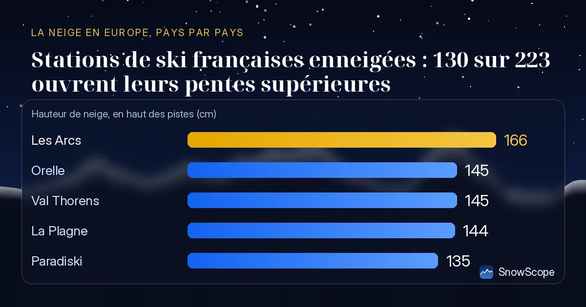
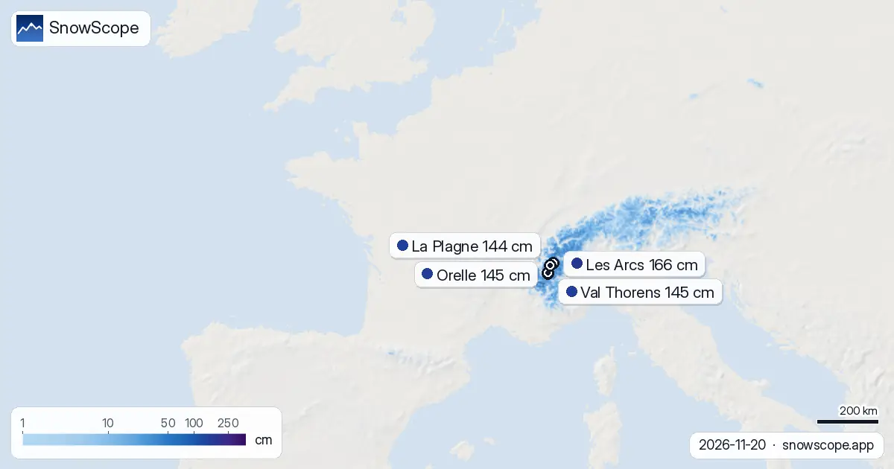
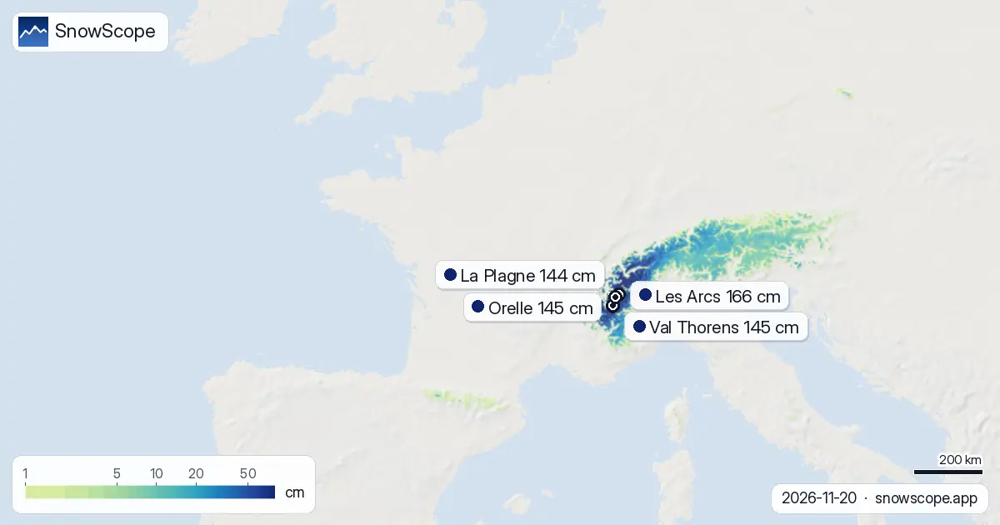

Stations de ski françaises enneigées : 130 sur 223 ouvrent leurs pentes supérieures
Plus de la moitié des stations de ski françaises ont maintenant de la neige sur leurs pentes supérieures. Au 20 novembre, 130 des 223 stations mesurent du manteau neigeux, le massif du Mont-Blanc et les Alpes du Nord ayant reçu des quantités exceptionnelles au cours des trois derniers jours.
Consultez les prévisions neige en temps réel pour Les Arcs sur l'application SnowScopeHauteurs de neige, alertes poudreuse et carte 3D, gratuitement.
Quelles stations ont de la neige et où
Le manteau neigeux sur le terrain de ski français reste inégal aux basses altitudes. Seuls 14 pour cent de la zone montagneuse cartographiée retiennent la neige, mais la répartition raconte une histoire claire : au-dessus de 2 000 m, la neige devient fiable. Entre 2 000 et 2 500 m, la profondeur moyenne est de 17 cm et 73 pour cent du terrain est couvert. Au-dessus de 2 500 m, les profondeurs moyennes atteignent 46 cm sur 95 pour cent des pentes.
En termes pratiques, cela signifie que les remontées supérieures et les pistes d'altitude sont opérationnelles dans 130 stations, tandis que les pentes basses restent fines ou dénudées. La limite des neiges s'établit autour de 1 700 m aujourd'hui. Les Arcs en tête avec 166 cm à son sommet, suivies d'Orelle et Val Thorens à 145 cm chacune. Ces stations d'altitude ont reçu des chutes de neige substantielles : Orelle et Val Thorens ont enregistré 143 cm au cours des trois derniers jours.
| Station | Hauteur de neige | Neige fraîche, 72 h | Attendu, jours suivants | Sommet |
|---|---|---|---|---|
| Les Arcs | 166 cm | 134 cm | 77 cm | 3 205 m |
| Orelle | 145 cm | 143 cm | 92 cm | 3 221 m |
| Val Thorens | 145 cm | 143 cm | 92 cm | 3 221 m |
| La Plagne | 144 cm | 125 cm | 77 cm | 3 058 m |
| Paradiski | 135 cm | 126 cm | 75 cm | 3 205 m |

Où la neige a tombé le plus fort
Le massif du Mont-Blanc a capté les précipitations les plus lourdes en 72 heures : 297 cm. Cette quantité exceptionnelle reflète la collision de l'air humide avec le terrain le plus élevé des Alpes. Les Alpes du Nord françaises ont reçu 180 cm, tandis que les Alpes du Sud en ont vu 124 cm. Ces totaux sont des mesures de notre modèle de neige, qui estime la profondeur de neige sur chaque zone montagneuse, et non des relevés à un point unique.
Le massif du Mont-Blanc et les Alpes du Nord sont vos meilleurs atouts pour une neige profonde et stable en ce moment. Orelle, Val Thorens et Les Arcs se trouvent tous dans ou près de ces zones et affichent le manteau le plus épais. La neige a commencé à tomber hier, 21 novembre, s'ajoutant aux chutes du 18 au 20 novembre.

Profondeur de neige par tranche d'altitude
Les tranches d'altitude montrent pourquoi le stockage d'eau dans les Alpes élevées s'accumule rapidement. Sous 1 500 m, le manteau neigeux est rare : 0 cm entre 500 et 1 000 m, et seulement 1 cm en moyenne entre 1 000 et 1 500 m avec seulement 9 pour cent de couverture. La zone de transition entre 1 500 et 2 000 m retient 7 cm en moyenne sur la moitié du terrain, marquant la limite où l'hiver reprend prise.
Au-dessus de 2 000 m, c'est là que la neige s'accumule en tant que réserve d'eau. Entre 2 000 et 2 500 m, 17 cm reposent sur trois quarts des pentes. Au-dessus de 2 500 m, le manteau neigeux s'épaissit à 46 cm en moyenne avec une couverture quasi complète. Cette stratification suggère que de bonnes conditions de base se forment dans les hautes montagnes, bien que la surface totale du manteau neigeux reste modeste : 12 730 km² sur 89 350 km² cartographiés, soit environ 14 pour cent.
Ce qui arrive la semaine prochaine
La tendance est favorable à une accumulation supplémentaire. Demain, 22 novembre, devrait être le jour le plus enneigé, avec jusqu'à 49 cm possible. Au cours des trois prochains jours, les stations peuvent s'attendre à 68 à 92 cm, selon la localisation : Val Thorens et Orelle pourraient voir 92 cm, tandis que Les Arcs et Paradiski pourraient recevoir environ 75 à 77 cm. Ce sont des estimations du modèle pour un terrain type à chaque station.
D'ici la fin de la semaine prochaine, la chute de neige fraîche totale pourrait atteindre 90 cm dans les meilleures zones. Après le 23 novembre, la fréquence des neiges diminue : la semaine suivante (28 novembre au 4 décembre) ne montre que 27 cm prévus, suggérant qu'une tendance plus sèche s'installe fin novembre.
Comment la semaine a changé la situation
Il y a une semaine, seuls 5 800 km² avaient du manteau neigeux. Aujourd'hui, ce chiffre est passé à 12 730 km², un gain de 6 930 km² en sept jours. Entre hier et aujourd'hui, 860 km² supplémentaires sont devenus enneigés. Ce changement rapide marque la transition de l'automne au début de l'hiver, entraîné par le système météorologique persistant qui a commencé le 18 novembre.
Les leaders des stations montrent l'intensité. Il y a cinq jours, Les Arcs avaient 94 cm. Hier, cela avait augmenté à 130 cm, puis à 166 cm aujourd'hui. Une croissance similaire apparaît à Orelle et Val Thorens, maintenant à 145 cm chacune après avoir atteint 111 cm il y a cinq jours. Cette semaine démontre comment le manteau neigeux de montagne peut s'accumuler rapidement lorsque les conditions s'alignent.
Terrain nu et risque sur les pentes basses
Avant de skier, rappelez-vous que les rochers et les obstacles peuvent encore être exposés sur de nombreuses pentes sous 2 000 m. Seulement 50 pour cent de la tranche 1 500 à 2 000 m est couverte de neige. Le terrain inférieur reste largement dénudé. Si vous vous aventurez hors-piste ou en terrain non balisé, consultez le bulletin d'avalanche officiel de votre région, car la neige fraîche sur une vieille couche mince peut être instable.
Utilisez la carte SnowScope pour trouver le ski le plus sûr : restez sur les remontées supérieures et les pistes d'altitude où le manteau neigeux est épais et continu. La tendance est favorable et plus de neige arrive, mais la patience sur les pentes basses paie.
Conseils aux skieurs
- Visez les altitudes au-dessus de 2 000 m où la couverture de neige est maintenant complète et les profondeurs dépassent 17 cm. Les stations du massif du Mont-Blanc et des Alpes du Nord offrent les conditions les plus fiables.
- Si vous prévoyez de skier demain ou les deux jours suivants, attendez-vous à d'importantes chutes de neige fraîche. Les pentes supérieures s'épaississent rapidement, mais les pistes basses peuvent rester fines ou fermer temporairement.
- Utilisez les bulletins d'avalanche officiels lorsque vous skiez hors-piste, en particulier sur les terrains escarpés où la neige fraîche repose sur une vieille couche mince ou sur le sol dénudé.
- Surveillez Val Thorens, Orelle et Les Arcs pour les manteaux les plus épais et le terrain le plus étendu. Chacun a absorbé des précipitations lourdes et se situe dans des zones très enneigées.
- Évitez les basses altitudes sous 1 500 m pour le moment. Les plaques dénudées sont courantes et les rochers sont un danger. Attendre quelques jours la prochaine vague de neige peut ouvrir plus de terrain inférieur en toute sécurité.
À propos de ces chiffres
Les hauteurs de neige des stations sont la neige la plus épaisse sur le haut du domaine, d'après le modèle de neige SnowScope (environ 1 km, calcul du 20 novembre) ; ce sont des estimations pour une zone, pas une mesure en un point. Les valeurs des stations de mesure sont mesurées à la date indiquée. Les prévisions peuvent changer. Consultez toujours le bulletin d'avalanche officiel avant le hors-piste.
Citer ce bulletin
Pour la recherche, l'enseignement ou la presse : chiffres et graphiques réutilisables librement sous CC BY 4.0 avec cette citation.
SnowScope (2026), Stations de ski françaises enneigées : 130 sur 223 ouvrent leurs pentes supérieures, https://snowscope.app/blog/fr/2026/11/france-resorts-with-snow-20-november-2026.html, consulté le 2026-11-20
SnowScope (Atlas Labs). (2026, November 20). Stations de ski françaises enneigées : 130 sur 223 ouvrent leurs pentes supérieures. SnowScope snow reports. https://snowscope.app/blog/fr/2026/11/france-resorts-with-snow-20-november-2026.html
BibTeX
@misc{snowscope2026franceresortswithsnow20n,
author = {{SnowScope (Atlas Labs)}},
title = {Stations de ski françaises enneigées : 130 sur 223 ouvrent leurs pentes supérieures},
year = {2026},
month = nov,
howpublished = {\url{https://snowscope.app/blog/fr/2026/11/france-resorts-with-snow-20-november-2026.html}},
note = {Published 2026-11-21 12:11 UTC; accessed 2026-11-20}
}· CC BY 4.0 · Méthodes, données et outils →
Les Arcs : neige et température selon l'altitude, cet hiver vs l'hiver dernier (outils) →
Suivre Les Arcs
Gratuit : un message quand la neige arrive, et la météo chaque matin.